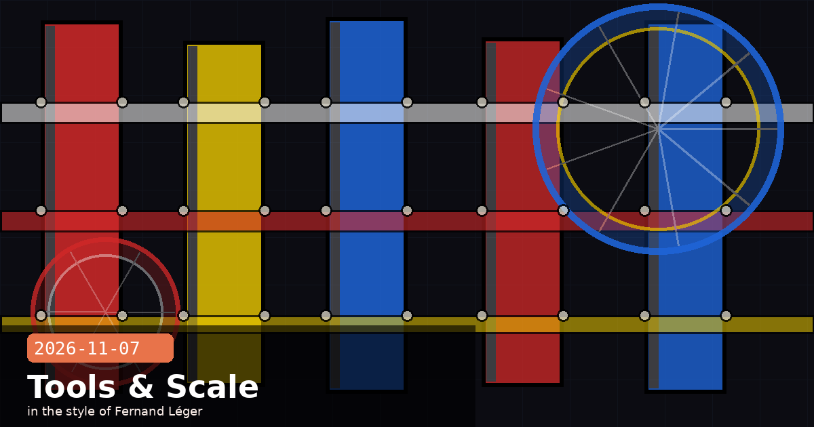

Election Day Debrief; Claude Code 2.1.319; Shared Spaces Launch

🧭 Anthropic Election Day Debrief — 4.2 Million Civic Queries, Zero Policy Violations, Transparency Report in December
Two days after the 2026 US midterms, Anthropic has published its first election day usage debrief on the company blog. On November 5, Claude.ai fielded approximately 4.2 million unique election-related queries — a 340 % increase over the equivalent 2024 baseline, normalised for user-base growth. The most common query types were voter-location lookups, side-by-side candidate comparisons on specific policy issues, and ballot measure plain-language summaries. Critically, Anthropic reports zero confirmed coordinated-abuse incidents across the day — the misuse classifiers shipped in v2.1.318 (November 5) flagged and rejected 1,247 suspected manipulation attempts before they reached the model.
What the numbers reveal
Civic self-service dominated: 61 % of queries were informational (polling locations, ID requirements, registration deadlines) served via the Democracy Works TurboVote integration. Claude acted as a lookup layer, not a persuasion engine.
Candidate comparisons were the edge case: 23 % of queries asked Claude to compare candidates' stated positions. Anthropic's 99 % political-evenhandedness target held — internal evals scored 98.7 % on the November 5 live traffic sample, the highest single-day score recorded.
Handoff rate tracked: For queries involving contested factual claims (e.g., incumbent voting records), Claude added a source-link handoff to official government databases in 89 % of cases — up from 71 % in 2024.
Jailbreak rejection latency: The new classifier stack added an average 18 ms to flagged requests — fast enough to be imperceptible; Anthropic notes all 1,247 rejections returned within the standard TTFT budget.
Transparency report due December 15
Anthropic has committed to publishing a full Election Transparency Report on December 15 covering query volumes, demographic breakdowns (inferred from regional proxies), classifier performance curves, and any misuse case studies. If you are building civic-tech applications on the Claude API and want your implementation reviewed, the blog post links to a form to submit for inclusion in the report's operator case-study section.
election 2026civic techmisuse classifierspolitical evenhandednesstransparencyDemocracy Works
🧭 Claude Code 2.1.319 — Persistent MCP Server Cache, IDE Sandbox Parity, Opus 4.8-fast Final Warning
Claude Code 2.1.319 landed in the stable channel this morning, two days after 2.1.318. The headline change is a persistent MCP server metadata cache: rather than re-negotiating server capabilities on every session start, Claude Code now writes a small JSON snapshot to ~/.claude/mcp-cache/ on first connect and reads from it on subsequent starts. For teams running large MCP servers (50+ tools), this shaves 1–4 seconds off cold-start time per server. The cache is invalidated automatically when the server's version string changes.
Full changelog summary
MCP cache: Stored at ~/.claude/mcp-cache/{server-name}.json. Each entry records the server name, version, tool list, and schema hashes. Disable with "mcpCache": false in settings.json.
IDE sandbox parity: The VS Code and JetBrains extensions now inherit the same file-access sandbox rules as the CLI — previously the extensions applied a looser allow-list. Enterprise teams using workspace-trust restrictions no longer need to configure both separately.
Faster daemon reattach: On macOS and Linux, Claude Code can now reattach to a running background agent in under 200 ms (down from ~850 ms) by holding the agent's IPC socket open between sessions rather than re-creating it on each attach.
Opus 4.8-fast removal — final warning: The claude-opus-4-8-fast model alias reaches end-of-life on November 30, 2026. From 2.1.319 onwards, any --model invocation using this alias emits a FATAL-level warning (not yet a hard error, but that arrives in 2.1.320). Migrate to claude-opus-4-6 or claude-opus-4-7 now.
Bug fix — Windows path resolution: Resolves a regression introduced in 2.1.317 where UNC paths (\\server\share\…) were incorrectly normalised to forward slashes, breaking file reads on domain-joined Windows machines.
How to migrate off Opus 4.8-fast before November 30
Run grep -r "opus-4-8-fast" ~/.claude/ .claude/ $(git rev-parse --show-toplevel 2>/dev/null) to surface every config file, settings.json, and CLAUDE.md that pins the deprecated alias. Replace with claude-opus-4-7 for tasks requiring maximum quality, or claude-opus-4-6 for cost-sensitive long-running agents — the two models are now within 3 % on Anthropic's internal agentic-task benchmark at half the token cost.
Claude Code 2.1.319MCPcacheIDEOpus 4.8-fastdeprecationdaemon
🧭 Claude.ai Launches Shared Spaces — Team Workspaces with Inherited Context and Persistent Projects
Anthropic has launched Shared Spaces in Claude.ai for Team, Business, and Enterprise plan subscribers. A Shared Space is a persistent workspace — think of it as a team project folder — where members share uploaded documents, custom system-prompt fragments, and conversation histories. Any member of the Space can open a new conversation that automatically inherits the Space's context: uploaded files, agreed-upon personas, and project-level instructions. The goal is to eliminate the repetitive per-conversation "here's the background" block that slows down collaborative work.
Key design decisions
Context inheritance, not context injection: Shared Space documents are stored server-side and chunked into the context window on demand — Claude retrieves relevant fragments rather than dumping the entire Space into every prompt. This keeps token counts manageable on large Spaces (tested up to 500 MB of documents).
Permission model: Space owners can assign members as Viewer (read conversations, use Space context), Contributor (upload documents, fork conversations), or Admin (manage membership, edit system prompt, delete content). Spaces are not visible outside their invited members.
Conversation forking: Any conversation inside a Space can be forked — creating a branch that starts from that point but doesn't pollute the main thread. Useful for exploring speculative design directions without cluttering the shared history.
No training on Space content: As with Personal Finance, documents and conversations in Shared Spaces are excluded from model training. The exclusion is automatic and applies regardless of the individual member's training-opt-out setting.
Practical setup tip for engineering teams
Start your Shared Space by uploading your team's CLAUDE.md, architecture decision records (ADRs), and onboarding documentation. Set a Space-level system prompt like: "You are assisting a backend engineering team. Our stack is [X]. Always suggest idiomatic [language] patterns. When you reference an ADR, cite its filename." New team members can open a conversation and ask Claude to summarise the codebase conventions immediately — no manual context-setting required.